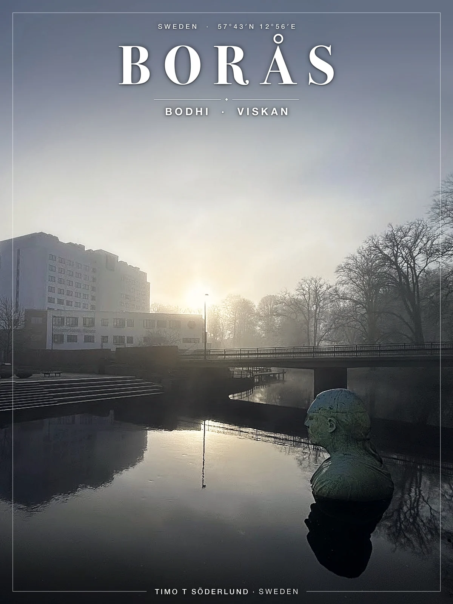
Bodhi · Viskan
Bodhi Sculpture · Viskan River, Borås, Sweden

Viskaholm · Caroli Kyrka
Viskaholm & Caroli Church · Borås, Sweden

Österlånggatan
Österlånggatan Street · Borås, Sweden

Pinocchio
Walking to Borås · Borås, Sweden

Viskan · Dawn
Viskan River & Dawn Clouds · Borås, Sweden

Bodhi · Viskan (Reflection)
Bodhi Sculpture · Viskan River, Borås, Sweden

Viskaholm
Historic Textile Mill · Viskan River, Borås, Sweden

Knallen · Stora Brogatan
Bronze Sculpture by Arvid Knöppel (1947) · Borås, Sweden
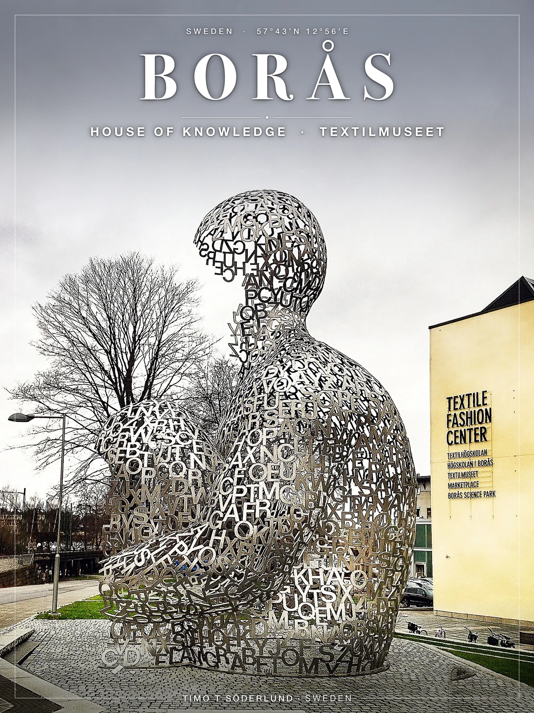
House of Knowledge · Textilmuseet
Sculpture by Jaume Plensa (2014) · Textile Fashion Center, Borås, Sweden

Bodhi · Västerbro
Bodhi Sculpture & Västerbro Bridge · Borås, Sweden

Viskaholm · Västerbro
Viskaholm Textile Heritage & Viskan · Borås, Sweden

Ramnakyrkan
Historic Timber Church (1690–1691) · Ramnaparken, Borås, Sweden
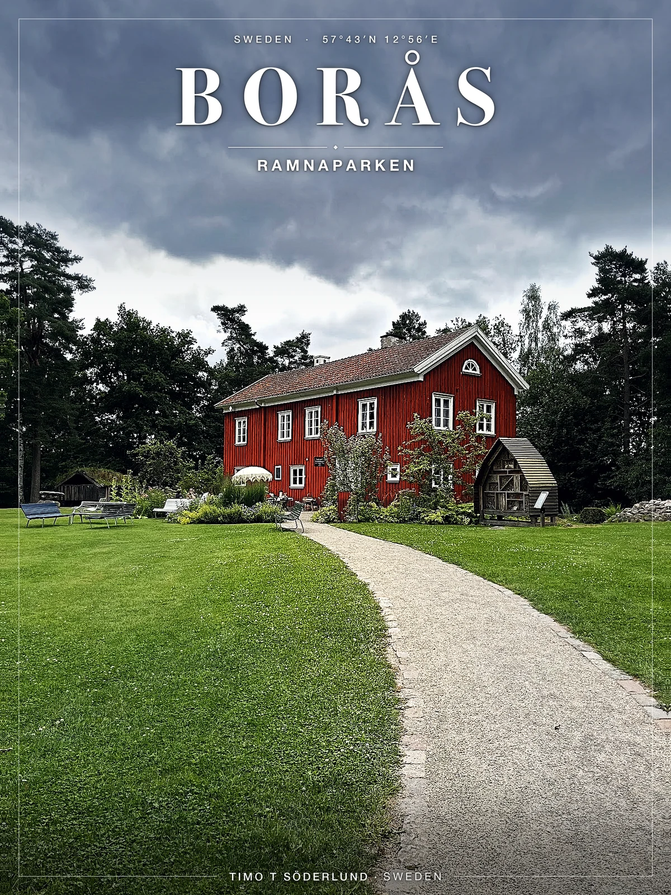
Ramnaparken
Borås Museum Open-Air Heritage Park · Borås, Sweden

Brämhults kyrka
Medieval Timber Church (c. 1479) · Borås, Sweden
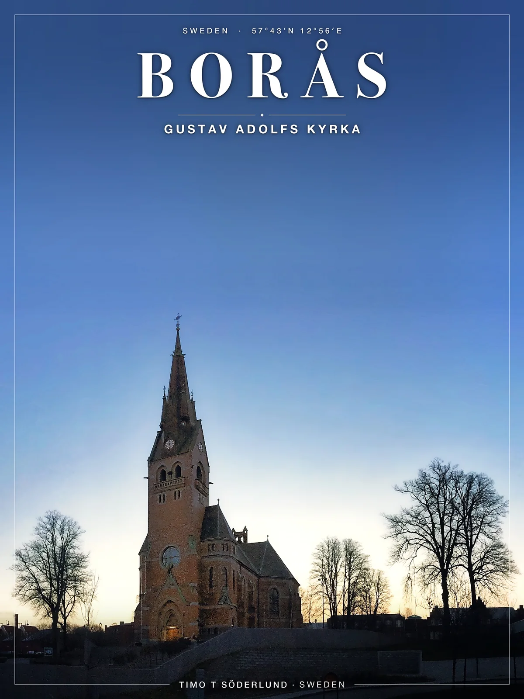
Gustav Adolfs kyrka
Church by Carl Bern (1903–1906) · Borås, Sweden
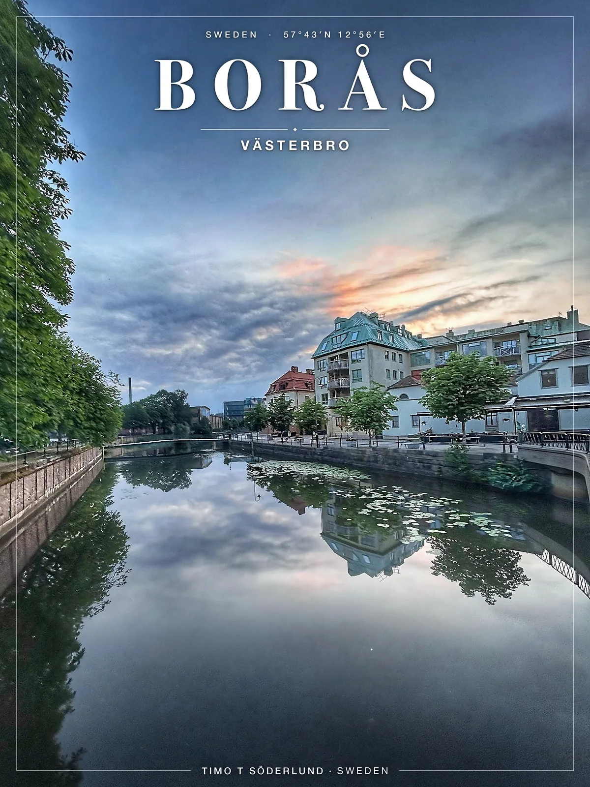
Västerbro
Viskan River & Copper Roofs · Borås, Sweden
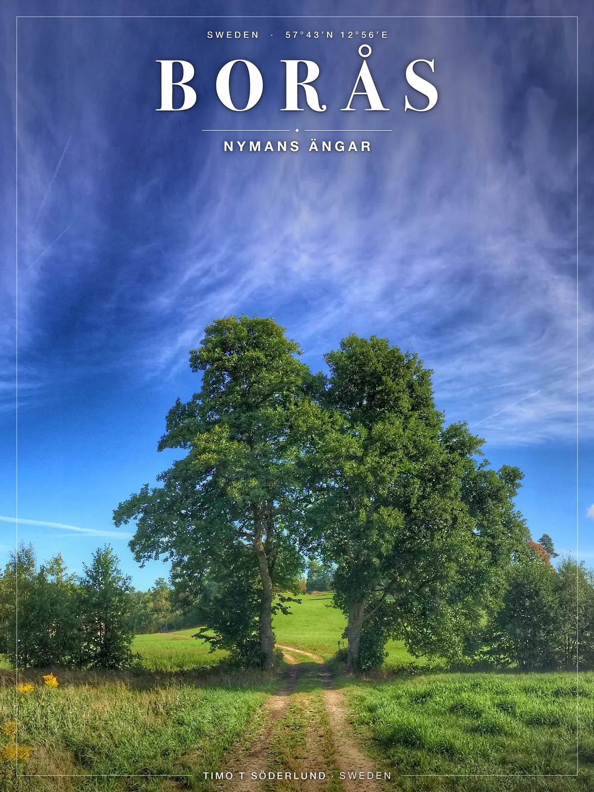
Nymans ängar
Summer Meadow & Dirt Road · Sandared, Borås, Sweden
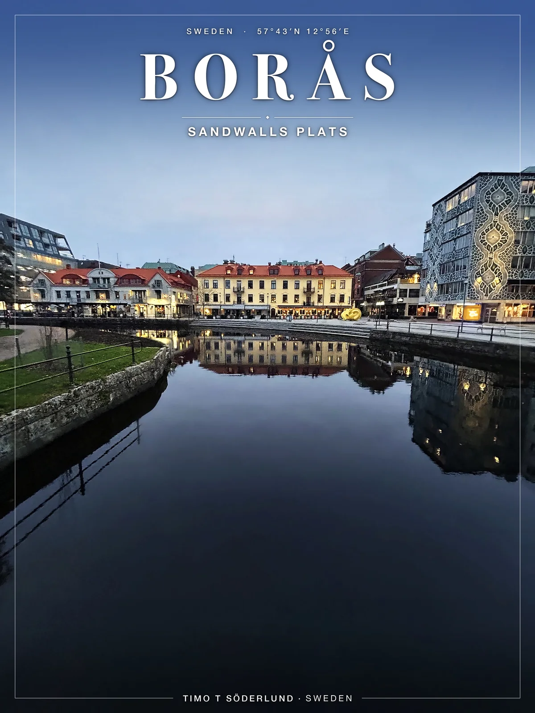
Sandwalls plats
Viskan Waterfront · Central Borås, Sweden
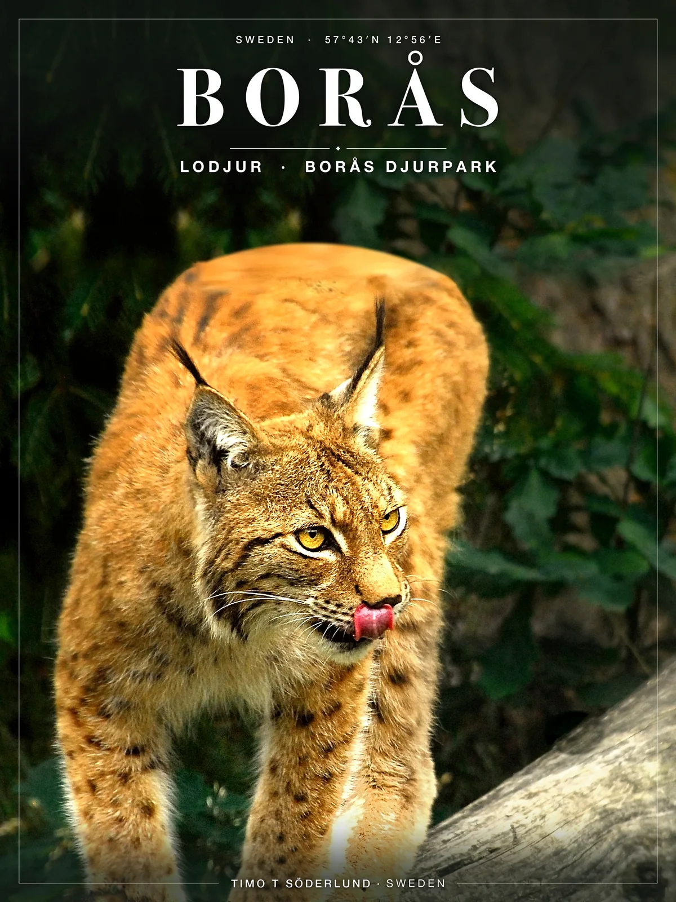
Lodjur · Borås Djurpark
Eurasian Lynx · Borås Djurpark, Borås, Sweden

Pingvin · Borås Djurpark
Humboldt Penguin · Borås Djurpark, Borås, Sweden
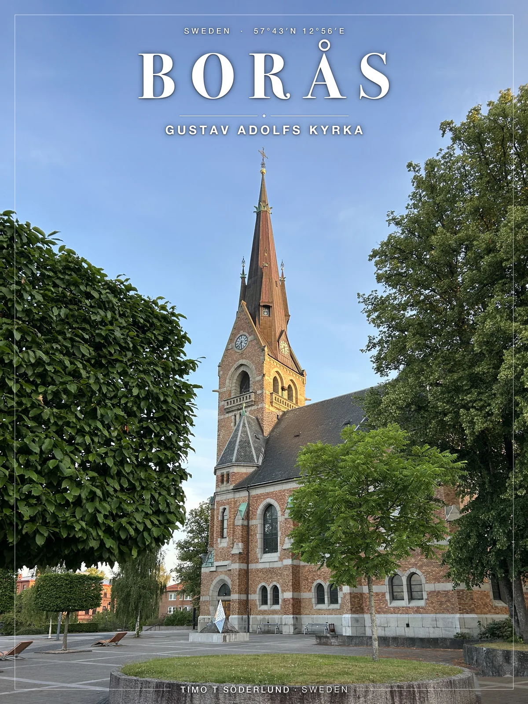
Gustav Adolfs kyrka (Summer)
Church by Carl Bern (1903–1906) · Borås, Sweden
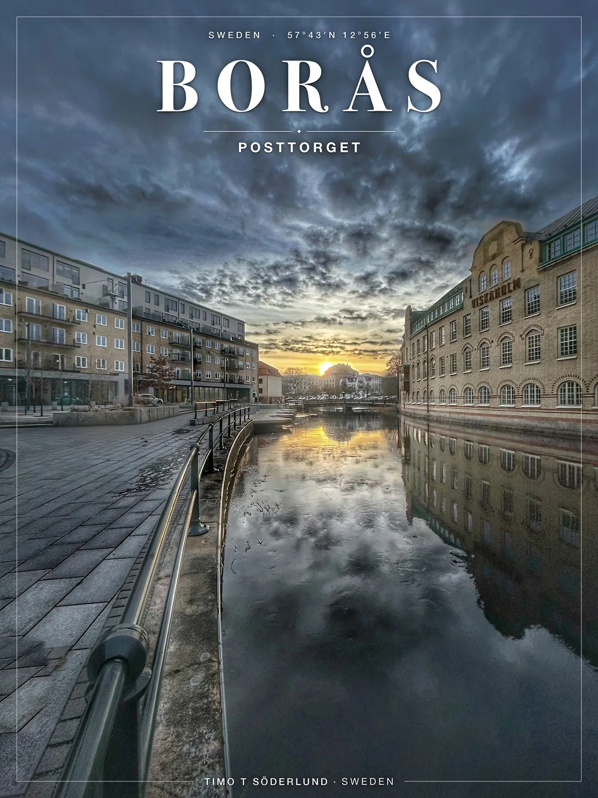
Posttorget
Viskan River & Evening Sunset · Central Borås, Sweden

Viskaholm · Viskan
Viskaholm & Caroli Tower in Morning Light · Borås, Sweden

Galathea 9 · Västerlånggatan
Historic Telegrafen Building (1913) · Borås, Sweden
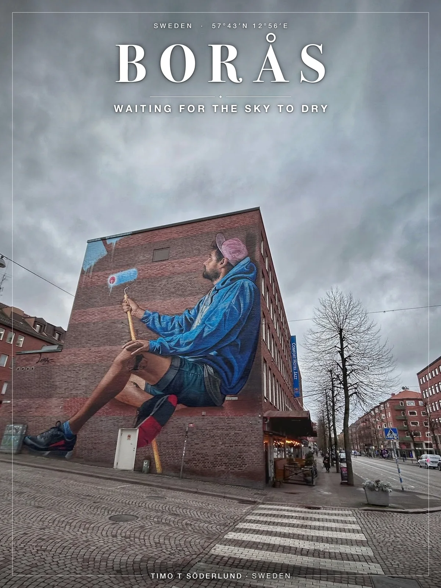
Waiting for the Sky to Dry
Mural by Lonac (2017) · Allégatan / Skolgatan, Borås, Sweden

JM Rizzi · Västerbro
75-Meter Mural by JM Rizzi (2017) · No Limit Street Art, Borås, Sweden
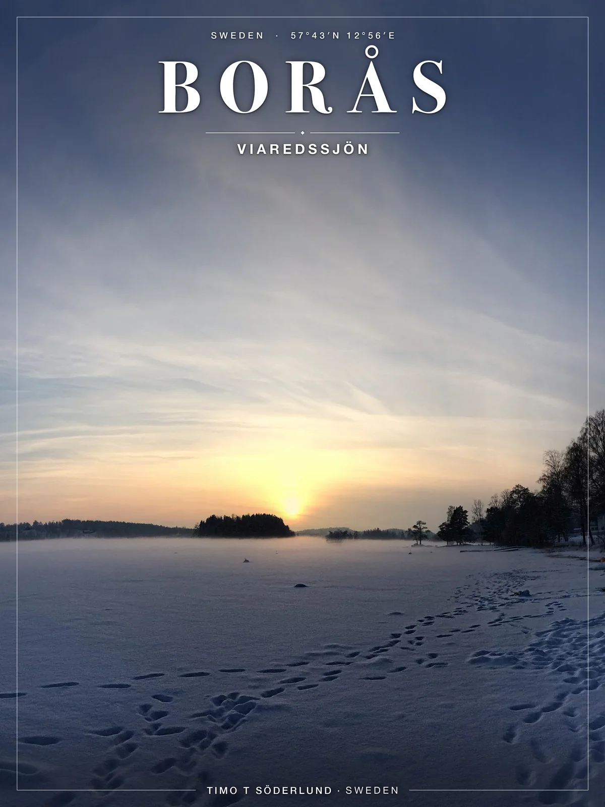
Viaredssjön
Lake Viaredssjön Shoreline & Calm Water · Borås, Sweden

Viaredssjön · Sandared
Lakeside Village, Modern Villas & Ridges · Sandared, Borås, Sweden

Posttorget · Viskan
Boardwalk Promenade, Viskaholm & Västerbrogatan · Central Borås, Sweden

Viskaholm · Viskan (Sunrise)
Golden Sunrise & Historic Viskaholm · Central Borås, Sweden

Knallen · Stora Brogatan (Morning Light)
Bronze Sculpture by Arvid Knöppel (1947) · Stora Brogatan, Borås, Sweden

Fiskargosse · Stadsparken
Bronze Sculpture by Sven Lundqvist (1991) & Orangeriet by Gert Wingårdh (2015) · Borås, Sweden

Den nöjde Boråsaren · Stora Torget
Black Diabase Sculpture by Olle Brandqvist (2008) · Torggatan / Stora Torget, Borås, Sweden

Ute · Södra Torget
Bronze Sculpture by Charlotte Gyllenhammar (2005) · Södra Torget, Borås, Sweden
Lynx · Borås Djurpark
Eurasian Lynx (Lynx lynx) on Nordic Granite · Borås Djurpark, Sweden
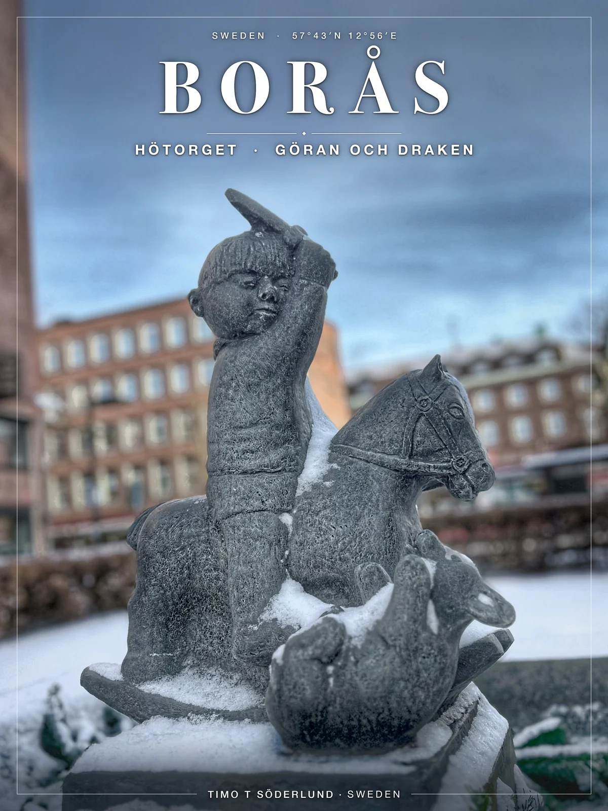
Hötorget · Göran och draken
Fountain Sculpture by Sven Lundqvist (1953) · Hötorget, Borås, Sweden

Göran och draken · Caroli
Sven Lundqvist (1953) at Hötorget & Caroli Kyrka (1669) · Borås, Sweden